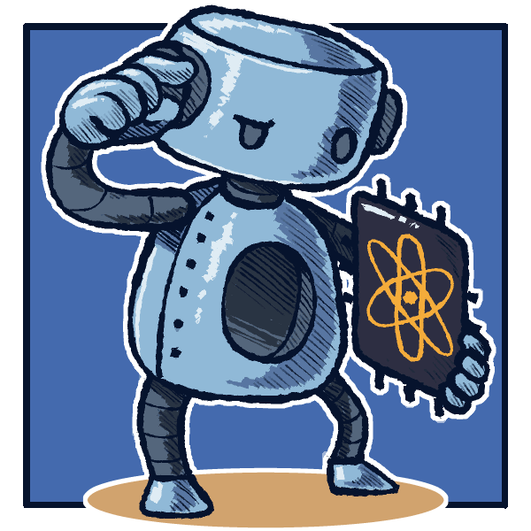
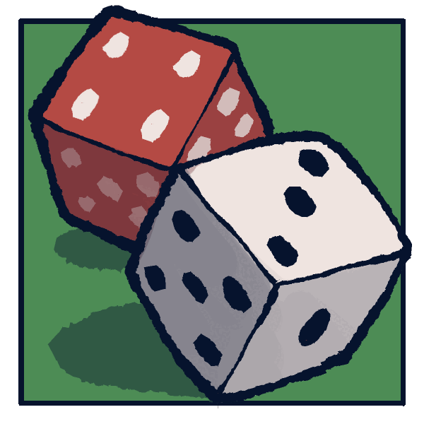
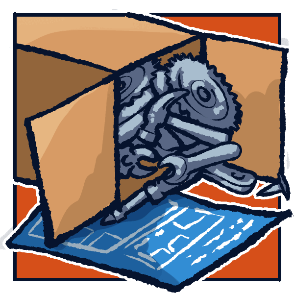
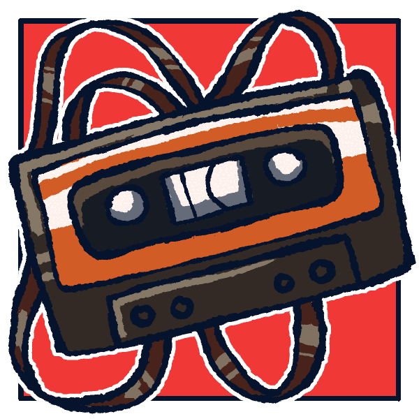
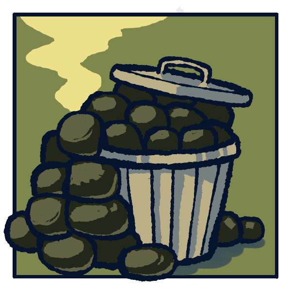
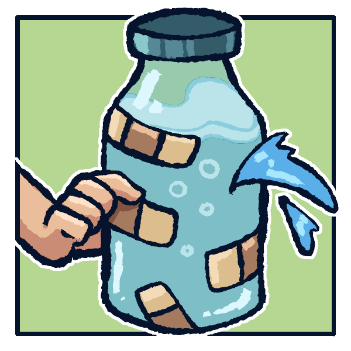
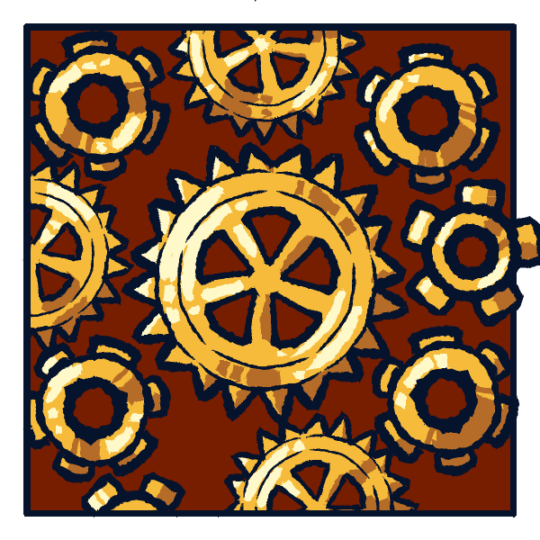
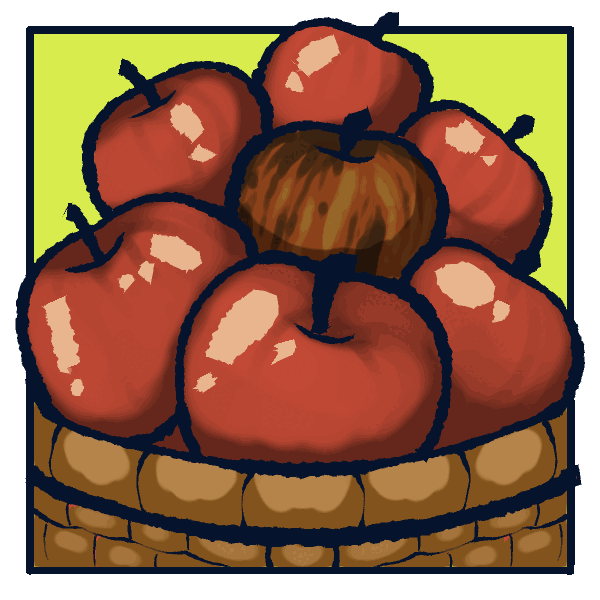
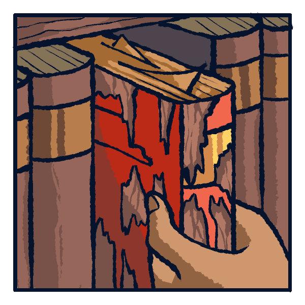
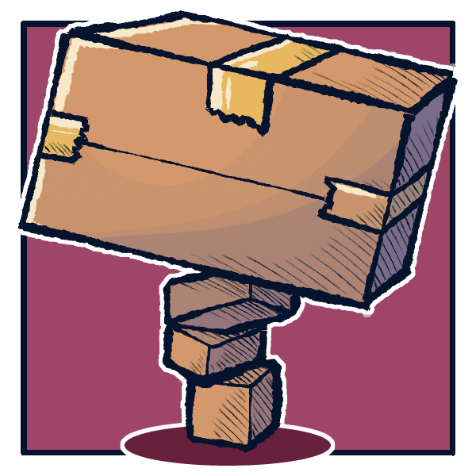

A tutorial at IEEE Quantum Week 2026 (QCE26), Toronto. Taught by Nishant Shukla.
Most quantum speedup claims depend on an oracle that exists only on paper. This course teaches the craft of building practical quantum circuits from scratch. Each lesson debunks a commonly held belief.










Session 1 (90 minutes): Myths 1 and 2, identifying a problem worth accelerating.
Session 2 (90 minutes): Myths 3 and 4, building the rollout oracle.
For practitioners and researchers comfortable with qubits, controlled gates, and circuit diagrams. A pre-read on amplitude estimation is included in the materials.